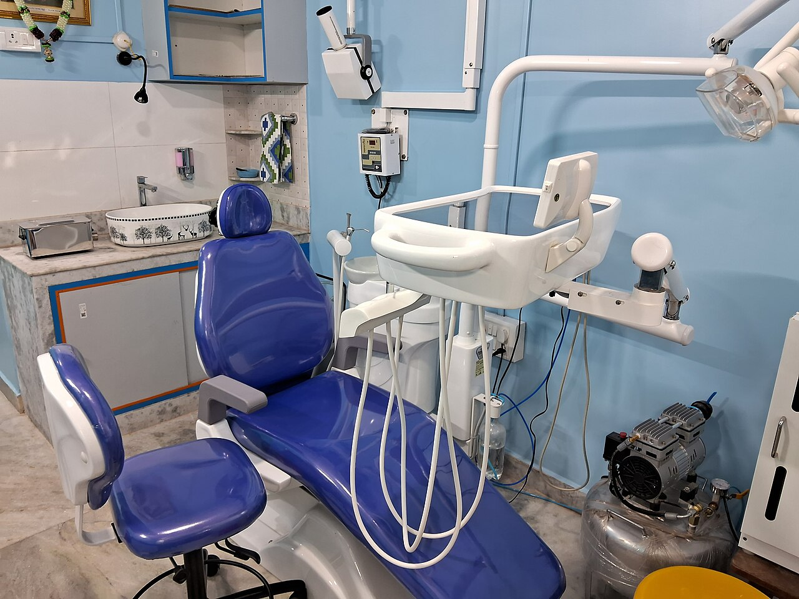

Convenient dental care for Dichpally residents — our Nizamabad clinic is just 20 km away.

Dichpally, known for its historic fort and proximity to Nizamabad city, is one of the closest towns to our clinic. Residents of Dichpally and surrounding areas like Mupkal and Jakaram find Hitech Dental Clinic the most convenient choice for quality dental treatment.
At just 20 km, we are among the nearest full-service dental clinics to Dichpally. Patients appreciate our short travel time, extended evening hours, and ability to handle both routine and advanced procedures in a single visit.
Take the Nizamabad–Hyderabad road from Dichpally towards Nizamabad city. Our clinic in Khaleelwadi, opposite Rajiv Gandhi Auditorium, is easily accessible via local transport.